FOUR
PROOFS.
NO HAND-WAVING.
Every claim below is trained live in PyTorch, then reduced to a single picture. Activations. Depth. Embeddings. Data — the four ideas everything after this is built on.
Every result in this deck is our own code — the screenshots come straight from the Jupyter notebook, and the complete Session1_Assignment.ipynb is one click away.
A LINE CAN'T
WRAP A RING.
Two concentric rings — inner class against outer class — are not linearly separable. A single linear layer can only draw a straight boundary, so it stalls near chance. Add one ReLU hidden layer and the boundary curls around the ring. Only the activation changed.
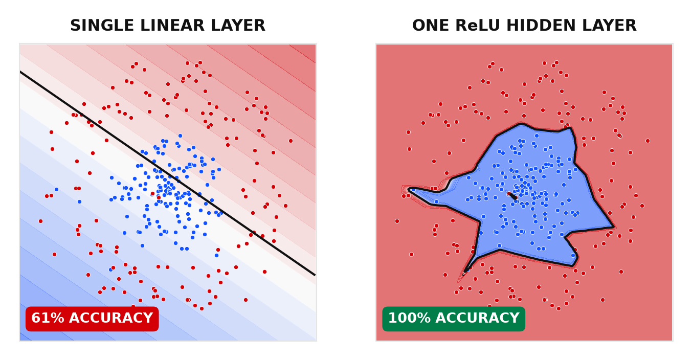
WE BUILT SmartNN BY HAND — AND TRAINED IT TO 100%.
The class, the training loop, loss falling to 0.0000, accuracy hitting 1.000 — then the boundary it learned, wrapping the ring.
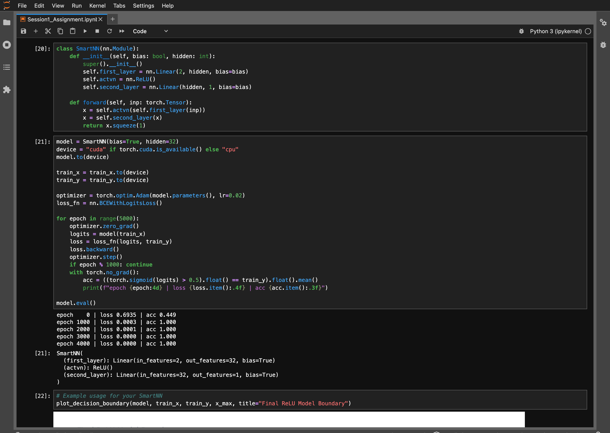
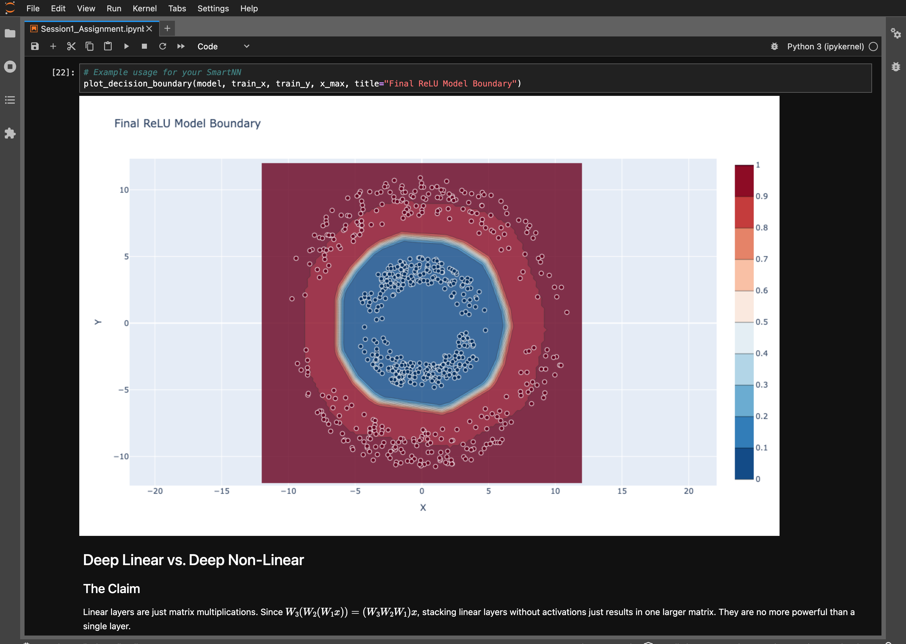
FIVE LINEAR
LAYERS ARE
STILL ONE.
Stack five linear layers with no activation and they collapse into a single matrix — same straight line, same accuracy as one layer. Depth alone buys nothing. Drop ReLUs between the same five layers and it solves the ring instantly.
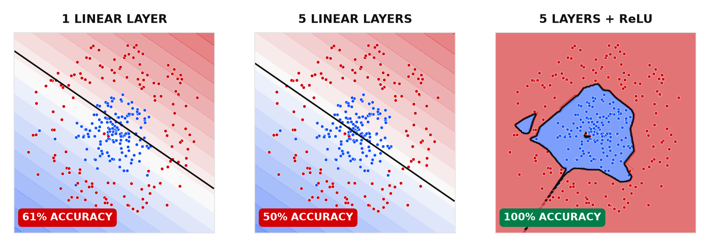
TWO NETS. ONE WITHOUT ReLU, ONE WITH.
Both written by hand: DeepLinearNN stacks five nn.Linear layers with no activation; DeepReLU_NN is the identical depth with a ReLU between each. A single training loop trains both.
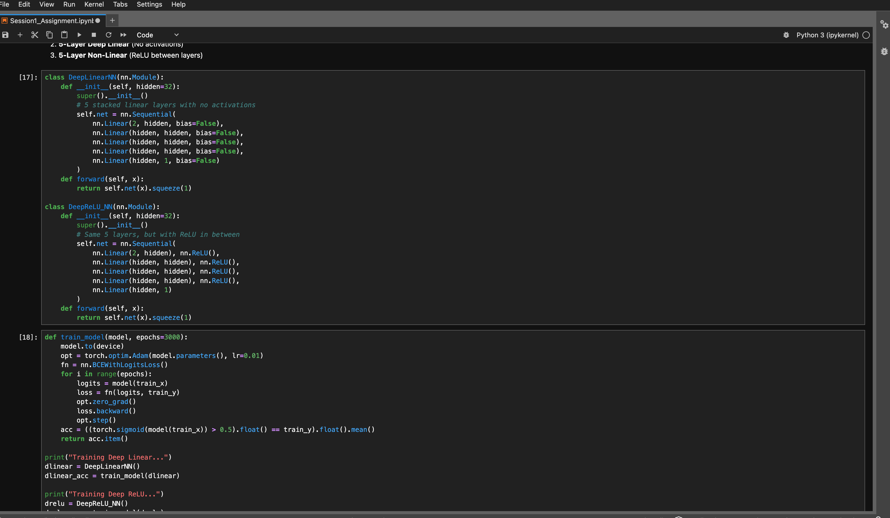
SAME DEPTH. ONE DRAWS A LINE, ONE WRAPS THE RING.
Five stacked linear layers collapse to a single straight boundary (≈50%). Drop a ReLU between the same five and it solves the ring at 100%. We also multiplied the five weight matrices by hand — the product matched the full net to 1e-8.
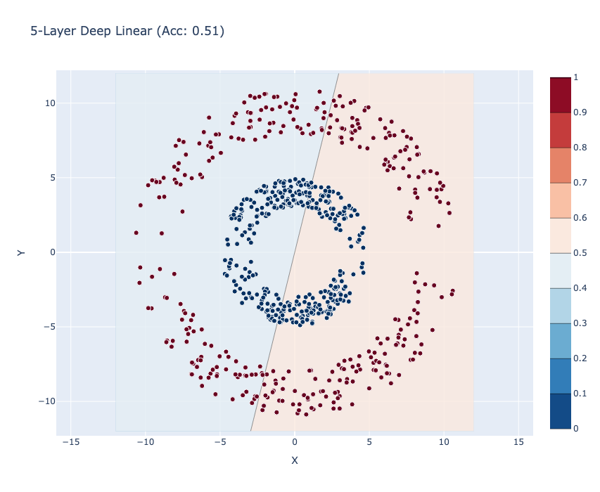
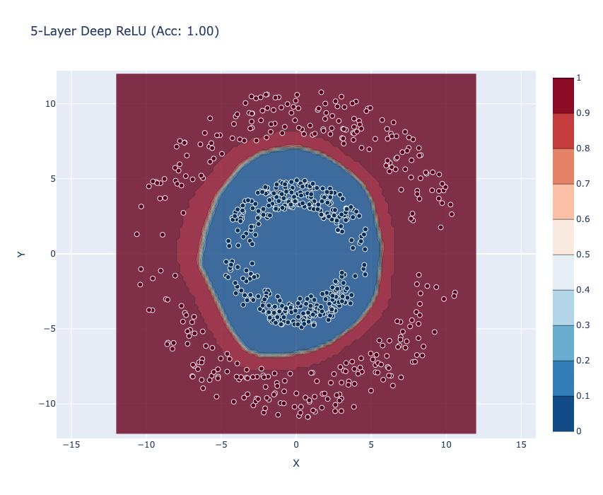
MEANING,
FROM NEXT-
TOKEN ALONE.
A tiny embedding→softmax model is trained on one job only: predict the next word in a toy grammar (animals · fruits · verbs). Similarity is never supplied — yet same-category words share next-token distributions, so their vectors drift together. Clusters emerge on their own.
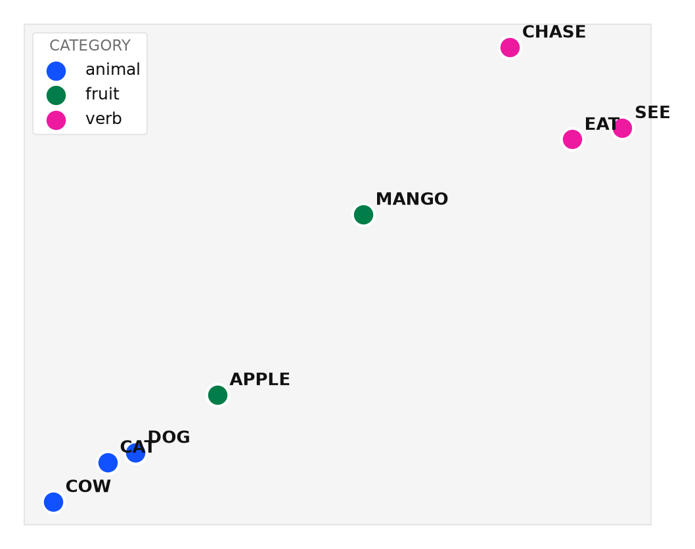
TRAINED ONLY ON NEXT-TOKEN. THE CLUSTERS APPEARED ANYWAY.
Left: our DummyNextWordPredictor — an embedding → linear head — with the toy-grammar data and its training loop. Right: the learned 2-D embedding it produced. Nothing told it cat and dog are alike; the next-token objective did.
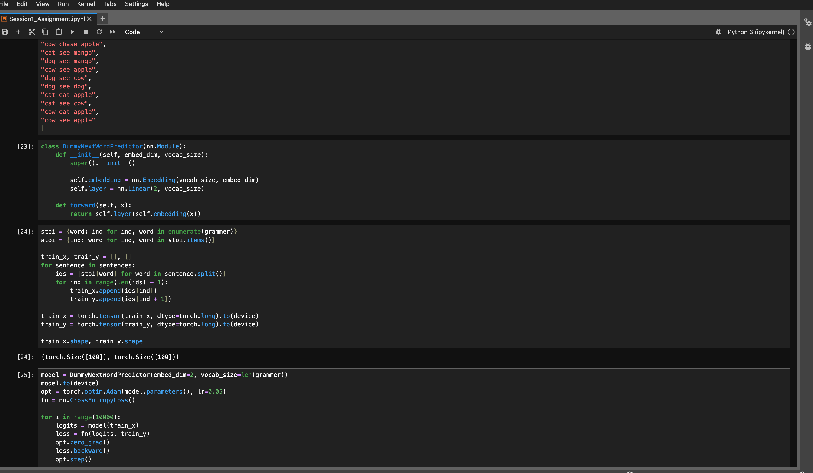
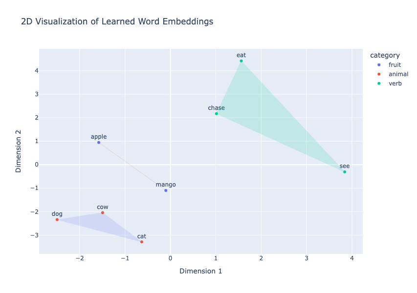
DATA IS
WHAT CLOSES
THE GAP.
A 33k-parameter net memorizes 20 points — train loss 0.00, test loss 1.62.
Grow the set to 200, then 2000, and the gap collapses — at 2000 the test loss even dips
below train. The model never changed. The data did.
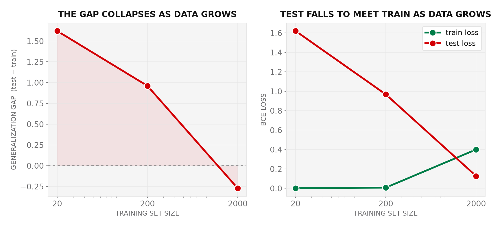
SAME MODEL, MORE DATA. THE GAP CLOSED.
We trained one 33k-parameter net at 20 / 200 / 2000 points and plotted the result ourselves. The gap crashes as data grows; train loss even rises while test loss falls to meet it — memorized at 20, generalized at 2000. “Data is everything.”
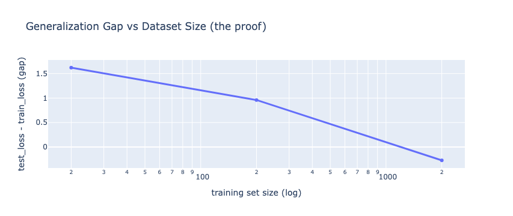
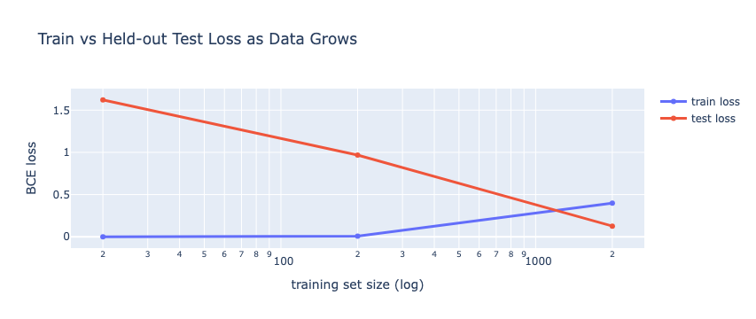
THE SAME NET, FROM MEMORIZED TO A CLEAN RING.
One architecture, drawn at three dataset sizes in a single grid we built in the notebook (cell [37]). At 20 points it fences off individual points — memorizing the noise. At 2000 it recovers the true ring, and test accuracy (0.95) finally beats train (0.89).
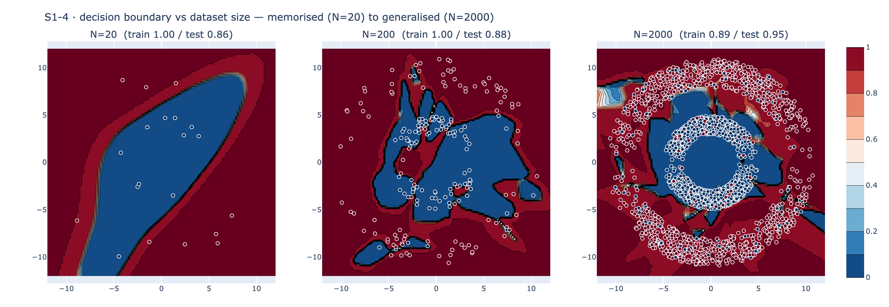
- 01Nonlinearity is what lets a network bend a boundary.
- 02Depth only matters when a nonlinearity sits between the layers.
- 03Embeddings learn structure from prediction alone — the seed of the transformer.
- 04Data is the lever that turns memorization into generalization.
Activations bend it. Depth compounds it. Embeddings encode it. Data grounds it. That is the runway to attention.